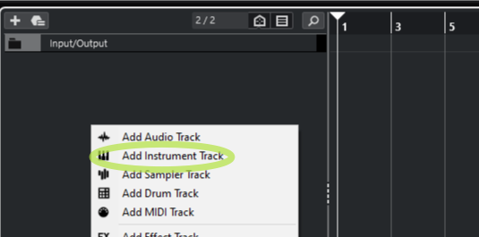
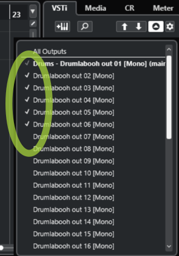

Table of Contents
Drumlabooh is designed not to interfere with creativity. All you need to write a drum part is to create a new MIDI track in your favorite DAW, load the Drumlabooh plugin onto it, then select one of the installed drum kits in it, or load samples from folders, and start playing from the keyboard, drum pads, or drawing notes in the sequencer. Drumlabooh uses existing sampled drumkits (Drumlabooh, Hydrogen, SFZ) or samples from sample packs.
1. Stereo vs Multi-channel modes
The first thing you need to know is that there are two versions of Drumlabooh — Stereo and Multi (Multi-channel or Multi-output). The latter provides a separate mono output channel for each instrument in the drum kit — 36 channels in total. To use the Stereo version, add the Drumlabooh plugin to a track. To use the Multi-channel version, add Drumlabooh-multi.
In the Multi-channel version, the plugin's pan, volume, and mute controls are disabled because you can control them via tracks or buses in your DAW. Read the DETAILS section to learn how to use Multi mode in your DAW and how to route each drum to an individual track or bus.
2.0 Kits
When Drumlabooh starts, it scans all available kits and displays a list of them for you to choose from. You can also click the Open button below the kit information section to manually select a drumkit file from any location. Choose an .xml (Hydrogen format), .sfz (SFZ), or drumkit.txt or drumkit.labooh (Drumlabooh format) file in the drumkit’s folder.
Full list of directories where Drumlabooh searches SFZ, Drumlabooh and Hydrogen kits
/usr/share/drumrox-kits /usr/share/drumlabooh-kits $HOME/drumrox-kits $HOME/drumlabooh-kits $HOME/drum_sklad //main directory for locally installed kits C:\drumlabooh-kits D:\drumlabooh-kits C:\drum_sklad /usr/share/hydrogen/data/drumkits /usr/local/share/hydrogen/data/drumkits /usr/share/drmr/drumkits $HOME/.hydrogen/data/drumkits $HOME/.drmr/drumkits
You can add your own custom folders to this list. To do this, create a text file named user-dirs.txt in the folder C:\drumlabooh (for Windows) or $HOME/.config/drumlabooh, and in the file, write the full paths to your directories on each line, for example:
/home/test/sfz-main /home/test/sfz-misc /home/test/hydrogen-kits /home/test/drumlabooh
Important note: when loading a drumkit, Drumlabooh converts the samples (in RAM) to match the DAW session’s sample rate. Large kits may take longer to load if, for example, the samples are at 48 kHz but the session rate is 44.1 kHz. The same applies to FLAC-compressed samples. If you try to load a large drumkit, please wait — do not assume that the plugin or DAW has frozen.
The best way to handle this is to use the Adapt button, which saves a copy of the current drumkit using the session’s sample rate and 32-bit float data format (24-bit for FLAC) in the drum_sklad directory. This copy will then be used as the active drumkit, and the next time it will load faster than the original kit.
This function works only with the Drumlabooh kit format and with samples in WAV, AIFF, or FLAC formats.
Now, let’s talk about how Drumlabooh supports different drum kit formats.
2.1 Hydrogen Drum Kits
When Drumlabooh starts, it searches for all installed Hydrogen Drum Machine kits in their default locations. Dozens of great kits have been created for Hydrogen. To install them you need to run Hydrogen and go to the Drumkits → Online Import menu, where you can select and download kits from the Hydrogen or Musical Artifacts repositories.
Some Hydrogen kits may already be installed on your Linux system. Currently, for both Linux and Windows, the best way to get new Hydrogen kits is through the Online Import feature, since public download links are generally not available.
2.2 SFZ Drum Kits
Drumlabooh scans for installed SFZ kits (as directories) in the pre-defined or user-defined locations.
High-quality AVL Drumkits can be downloaded in SFZ format from AVLDrumkits_SFZ.
Drumlabooh supports a limited set of SFZ opcodes and parameters: group, off_by, region, key, sample, default_path, offset, lovel, and hivel. Drumlabooh does not support sample file names that contain spaces (because they are difficult to parse correctly from the SFZ file).
2.3 Drumlabooh Drum Kits
Drumlabooh uses its own kit formats (there are two formats, text-based and XML). One kit equals one directory, which should be placed in user-defined or pre-defined locations such as $HOME/drumlabooh-kits, $HOME/drum_sklad, or /usr/share/drumlabooh-kits on Linux, and in C:\drumlabooh-kits, D:\drumlabooh-kits, C:\drum_sklad, or D:\drum_sklad on Windows.
Drumlabooh usually installs kits automatically from its official Drum Sklad repository on GitHub. You can also find detailed information about the formats there — it is quite simple. The word "sklad" means "warehouse," "storage," or "repository."
Additional kits that are not hosted on GitHub can be downloaded from the Drum Sklad channel on Telegram. The complete Drumlabooh kit collection therefore includes Drum Sklad on GitHub and Drum Sklad on Telegram.
Many of native Drumlabooh kits include optional built-in General MIDI mapping settings, which can be used in MIDI Map mode by selecting the Kit option there.
2.5 Folder Kits
Drumlabooh can use directories placed at $HOME/drum_dirs, C:\drum_dirs, or D:\drum_dirs as ready-to-use Alternate Sample kits. Just create a drum_dirs directory and put, for example, a My Drumkit folder inside, where you place the samples in subdirectories as follows (names can vary):
1. Kick
kick01.wav
kick02.wav
kick03.wav
2. Snare
snare01.wav
snare02.wav
snare03.wav
Here, 1. Kick and 2. Snare are subdirectories, and the others are files inside them. The numbers in directory or file names help Drumlabooh sort them alphabetically.
This is a simple way to use many sample packs by just unpacking them into the drum_dirs directory. Many such kits are available from https://www.reddit.com/r/Drumkits/.
There are some limits for Folder Kits: a maximum of 36 instrument folders per kit and up to 128 samples in each directory/folder.
Supported sample formats
Drumlabooh supports samples in the following formats: WAV, AIFF, FLAC, OGG, and MP3. OGG and MP3-based kits cannot be adapted. Stereo samples are read as mono (using the left channel), because pre-panned drums (from the kit) can make internal mixing sound unnatural.
3. Built-in mixer
To the right of the drumkit list, you see 36 cells (or slots) for loaded samples. Here is the layout of each cell:

1. LED – lights up when a note is played.
2. Instrument name – defined in the kit; otherwise, the file name is used.
The background color changes depending on the sample type — empty slot, sample with a single layer, sample with multiple layers, sample with variants. The latter can be selected using the + and - buttons located to the left.
The tooltip over the instrument name shows the current MIDI mapping settings for this slot.
3. FX – button to open the FX window for this instrument. You can close the window using the "close" button or the Escape key. All effects in that window can be turned on or off, so they work only when enabled.
There are LP (Low-pass filter, allows only frequencies below the cutoff value) and HP (High-pass filter, allows only frequencies above the cutoff value). To simplify the code and improve performance, the cutoff parameter is not in Hz but a floating-point number within the range 0..1.
Both filters are resonant and have the resonance parameter. Experiment with the sliders to create new and interesting sounds. The HP filter works best for hi-hats, the LP for kicks; either HP or LP can produce cool effects on the snare. If your sample sounds weak or thin, try the Analog slider to add some warmth.
The following interface elements are not available in the Multi-channel version of the plugin, as they would duplicate the DAW's elements for the tracks associated with the plugin.
4. Pan control – values range from 0 (full left) to 1 (full right), with 0.5 being the center. See the Pan mode option to understand the panning algorithm. It is important to note that different DAWs have different pan modes for mixing; sometimes the DAW provides an option to select it. Drumlabooh internally behaves like the DAW mixer and offers the same flexibility.
5. Volume slider – non-linear, with values ranging from -96 to +6 dB.
6. Mute switch – mutes the instrument.
Under the Options, you will find the "global" Analog switch and slider, which affect the entire mix at the end of the signal chain. Useful for live but quiet drums.
4. Options section
At the lower right part of the plugin window, you can see Options.
MIDI map mode – there are two modes, Auto and Kit. With Auto, Drumlabooh assigns MIDI notes to samples starting from the numerical value of another option, Base MIDI note (default: 36), which specifies the MIDI note number to map the first instrument in the kit. MIDI note 36 = C in the 2nd octave. This mode is the default and works well for playing from a MIDI keyboard. When Kit is selected, Drumlabooh uses MIDI note assignments from the drumkit file; usually, this is General MIDI mapping, compatible with e-drums and drum pads. It is also the proper mode for Ardour's drum grooves.
So, MIDI mapping is the assignment of MIDI note numbers to drum instruments (Drumlabooh cells/slots) from the kit. The mapping data is included in many Drumlabooh and SFZ kits. However, some drums or percussion instruments are not covered by General MIDI, so in these cases, Auto mode is more useful and gives you access to all instruments in the kit.
If the drumkit has no MIDI mapping defined, and you've selected the "Kit" mode, Drumlabooh will use "Auto" mode instead.
For more complex MIDI mapping, use the power of your DAW, e-drum/pad options, or plugins such as, in Reaper, "JS MIDI map to key v2" – just place it before Drumlabooh and create or select a mapping file, for example:
A3 -> E5 C4 -> C5
Fixed MIDI velocity - turn on to play samples at maximum velocity; useful for electronic music.
Rnd seed tweak - "seed" for the pseudorandom number generator, ranging from 1 to 16777216. Drumlabooh uses a deterministic pseudorandom number generator, ensuring that with the same Rnd seed tweak value and the current playback position, the sequence of numbers will always be identical each time.
For some samples in the drum kits, there are variations that are selected based on the values from this generator, which adds a sense of live performance to the drum part. With a regular random generator, each new playback would produce different-sounding parts, and sample variations would be unpredictable, making mixing and mastering more difficult.
In Drumlabooh, however, you will always get the same sequence of such numbers every time, but it depends on the Rnd seed tweak. Change its value - and you get a completely new sequence. You have 16777216 possible sequence variations.
Pan mode – allows you to select the pan mode for Drumlabooh's internal mixer. See the article. The default panner is equal power panning, law: -3 dB (sin/cos taper).
By the way, pan mode is a significant factor in how a DAW "sounds." The pan mode, or panning law, is the algorithm that controls the total acoustic power output of two channels, reducing their level when the pan position moves to the center. Otherwise, the sound at the center would be louder, because both channels play at full power, making it louder than the same mono sound. Therefore, any stereo output must be reduced to some degree when the pan position approaches the center to prevent a loudness increase.
It may be better to set the pan mode in Drumlabooh to match your DAW's pan mode, so that all drum samples are panned consistently. Experiment to find what sounds best in your mix.
Analog – the global saturation on/off and its level. Useful for quiet drum kits.
5. Multi-channel explained
In the Multi-channel version (Drumlabooh-multi), the plugin's pan, volume, and mute controls are disabled, because you can control them via tracks or buses in your DAW.
Drumlabooh provides 36 mono output channels, one per sample of the drumkit.
5.1 How to use Multi-out with Ardour?
0. You can manually route the plugin's outputs to tracks or buses, but read further to learn how to do it automatically.
1. Create a MIDI track with Drumlabooh-multi as the instrument.
2. You'll see this window:

Select "36 channels" and "Fan out," then press Add. That's all! Now you have 36 tracks as outputs, already routed from Drumlabooh-multi's track.
3. Load the drumkit into Drumlabooh-multi. For example, Ludwig Sixties. It has 19 instruments. Thus, we need only 19 output channels from the 36 available. Remove the unused ones.
The alternative way:
If you put Drumlabooh-multi on an already created track (for example, previously used with Drumlabooh-stereo), you can route channels manually or semi-manually. In the latter case:
1. By default, Drumlabooh-multi will play to the stereo output. We don't need that. Let's create individual channels or buses for each drum/percussion sample.
2. Right-click on the top of the channel strip and select Fan out to tracks or Fan out to buses. Now you have one track or bus per channel to control each of the 36 drumkit channels. Please note that these tracks and buses are mono, so to use stereo FX on them, right-click on the effect, select Pin connection, and connect the pins to create stereo:

3. All new tracks/channels are now in a group. To ensure they can be muted, soloed, etc., properly, right-click on the group header and select Remove group:

4. Now, remove the unneeded tracks (for example, if the kit has only 8 instruments, but you have 36 tracks from Drumlabooh!)
5.2 How to use Multi-out with Reaper?
0. You can manually route the plugin's outputs to tracks or buses, but read further to see how to do that automatically.
1. Insert → Virtual Instrument on track, and add Drumlabooh-multi (LV2i or VST3i).
2. Confirm in the Build routing confirmation window.
3. Voila!
5.3 How to use Multi-out with Cubase?
1
2

3 - LOAD KIT

4

5

6
7

8

9